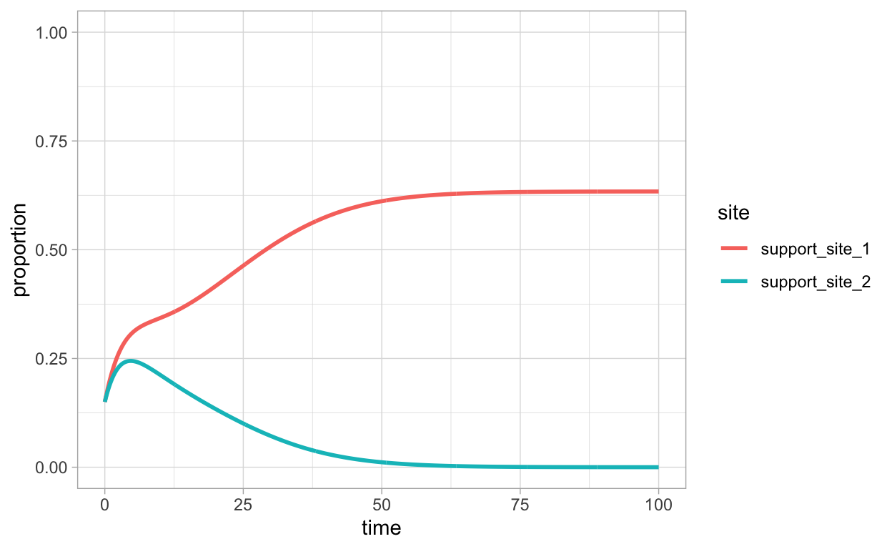
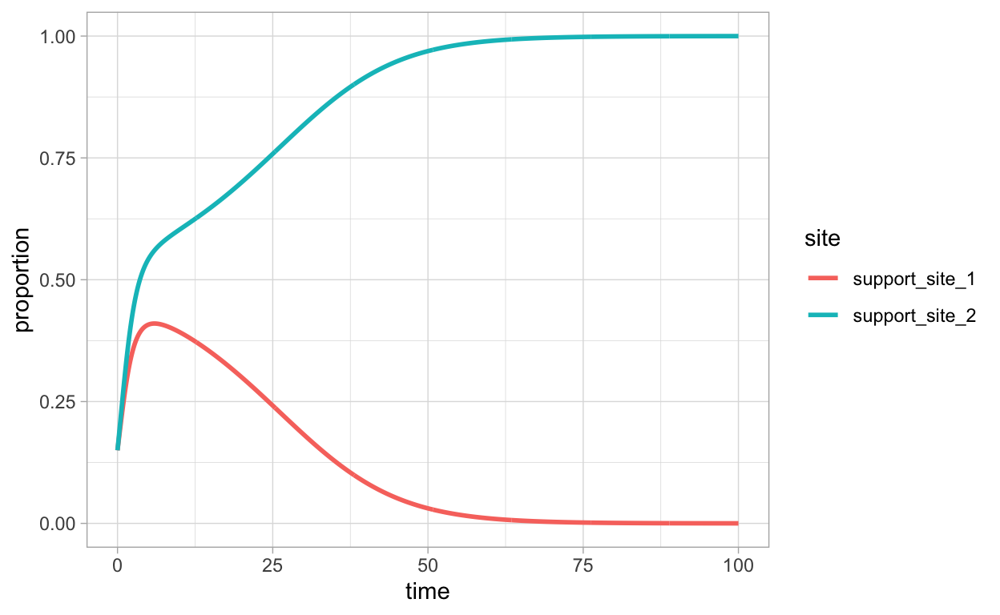
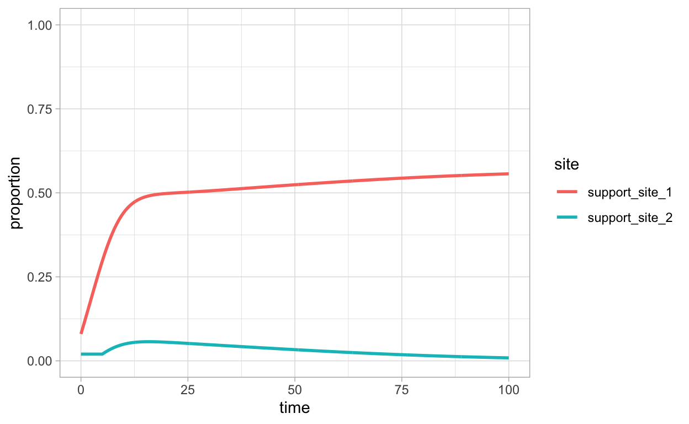
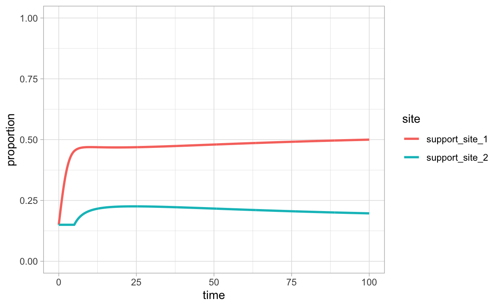

A case study in mathematical modeling in biomathematics on honeybee nest-site selection.
This notebook presents a case study in order to demonstrate and synthesize concepts and methods covered in Topics in Biomathematics. You can also view this as a scaled-down example of a model report. This particular case study deals with the question of what are some of the behavioral mechanisms involved in nest-site selection by honeybees. As we will see, one can adapt the SIR approach to modeling the spread of an infectious disease to gain insight into how honeybees come to agree upon a nest-site when given a choice between multiple sites.
Honeybees are social insects, they live as collectives in colonies and their social lives involve making collective decisions. Further, the results of collective decision-making impact the fitness of the insects. There is much we could discuss regarding collective decision-making (see, e.g., (Sumpter 2010)), but for our purposes here it is most relevant to point out that in some cases, collective decisions must be dissent-free. In such cases, the entire collective comes to an agreement, it is all or nothing. This is in contrast to situations in which the best strategy for maintaining or increasing fitness is to keep several options open.
An example of dissent-free collective decision-making is in nest-site selection by honeybees. The way this typically works is that a number of scouts will individually go out in search of a site. Once a scout encounters a potentially viable location, they assess the quality of the site. If the scout determines the site is particularly good, they will express their enthusiasm for the location by a physical display known as a dance. This communicates to the other members of the collective that there is a good nest-site option. The question is, given options for two or more nest-sites, how is a single one chosen? This question is taken up in (Britton et al. 2002) where the authors use mathematical modeling to gain insight into the problem.
As is pointed out in the paper, there are two sources of feedback that need to be considered in addressing the honeybee nest-site selection question. These are
the intensity of the dance of a honeybee decreases and an individual will eventually stop dancing perhaps even before a decision is made, and
some scouts change their site-preference.
Thus, a mathematical model that attempts to represent nest-site selection must take into account not only competing advertisement but also these sources of feedback.
How should the nest-site selection be modeled mathematically? In (Britton et al. 2002), the authors follow (Karmeshu and Pathria 1980) and treat the problem from the perspective of spread of information. The perspective taken is that information spreads analogously to the spread of an infectious disease. As we know, the spread of an infectious disease can be modeled via SIR type models which in turn can be viewed as compartment models.
In modeling we focus on the situation where there are two possible nest-sites so that bees need to decide based on competing information about just two options. In order to proceed, we will describe the compartments relevant for a mathematical model, these are the quantities that will change with time. These are
undecided (neutral) bees
bees in favor of and advertising for site 1
bees in favor of site 1 but not actively advertising
bees in favor of and advertising for site 2
bees in favor of site 2 but not actively advertising
There is one further point to make relevant for developing a mathematical model for honeybee nest-site selection. This is that there are multiple ways in which a bee may change its allegiance for one site over another. Specifically, we have either
Indirect switching in which a bee in favor of site \(i\) but not actively advertising for \(i\) returns to the neutral state before then deciding to advertise for site \(j\) instead.
Direct switching in which a bee in favor of site \(i\) but not actively advertising for \(i\) moves directly to advertising for site \(j\) instead.
Let
\(X(t)\) denote the number of undecided bees at time \(t\),
\(Y_{1}(t)\) denote the number of bees actively dancing for site 1 at time \(t\),
\(Y_{2}(t)\) denote the number of bees actively dancing for site 2 at time \(t\),
\(Z_{1}(t)\) denote the number of bees in favor of but not actively dancing for site 1 at time \(t\), and
\(Z_{2}(t)\) denote the number of bees in favor of but not actively dancing for site 2 at time \(t\).
Now we introduce the mathematical model and results for each of the indirect and direct switching cases one at a time.
An appropriate compartment diagram for the indirect switching model is represented by the following graph:
a_graph <-
create_graph() %>%
add_n_nodes(n=5,label = c("X","Y1","Y2","Z1","Z2"),
node_aes = node_aes(shape="rectangle",color = "black")) %>%
add_edges_w_string(edges = "1->2 1->3 2->4 3->5 4->2 4->1 5->3 5->1") %>%
select_edges_by_edge_id(edges = 1:8) %>%
set_edge_attrs_ws(
edge_attr = color,
value = "black")
render_graph(a_graph, layout = "nicely")
The corresponding model equations are
\[ \begin{align*} \frac{d}{dt}X &= -\beta_{1}XY_{1} - \beta_{2}XY_{2} + \lambda Z_{1} + \lambda Z_{2} \\ \frac{d}{dt}Y_{1} &= \beta_{1}XY_{1} - \gamma Y_{1} + \delta \beta_{1}Y_{1}Z_{1} \\ \frac{d}{dt}Y_{2} &= \beta_{2}XY_{2} - \gamma Y_{2} + \delta \beta_{2}Y_{2}Z_{2} \\ \frac{d}{dt}Z_{1} &= \gamma Y_{1} - \lambda Z_{1} - \delta \beta_{1} Y_{1} Z_{1}\\ \frac{d}{dt}Z_{2} &= \gamma Y_{2} - \lambda Z_{2} - \delta \beta_{2}Y_{2}Z_{2} \end{align*} \]
We would like to explore the model dynamics and interpret results in the context of the honeybee nest-site decision problem. First, some parameter values will be fixed while others will be allowed to vary in order to simulate different scenarios. The following table lists the parameters and their values, noting in cases when parameter values will be varied.
| Parameter | Value |
|---|---|
| \(\beta_{1}\) | 0.6 |
| \(\beta_{2}\) | varies |
| \(\gamma\) | 0.3 |
| \(\delta\) | 0.5 |
| \(\lambda\) | 0.3 |
We will explore the model dynamics using numerical approximations for solutions to the model equations. The following code implements the equations in R.
We illustrate one possibility for the dynamics in the case where \(\beta_{2}=0.5\). This means that site 2 is inferior in quality relative to site 1. Denote by \(N\) the total colony population. After solving the equations, we plot the proportion of bees in favor of site 1 (\(\frac{Y_{1}+Z_{1}}{N}\)) as a function of time together with the proportion of bees in favor of site 1 (\(\frac{Y_{2}+Z_{2}}{N}\)) as a function of time.
times <- seq(0,100,by=0.1)
state <- c(X=0.7,Y1=0.15,Y2=0.15,Z1=0,Z2=0)
parameters <- c(b1=0.6,b2=0.5,l=0.3,g=0.3,d=0.5)
indirect_sol <- ode(y=state,times=times,func=indirect_sys,parms=parameters)
indirect_sol_df <- indirect_sol %>% data.frame() %>% as_tibble() %>% mutate(support_site_1=Y1+Z1,support_site_2=Y2+Z2)
indirect_sol_df %>%
pivot_longer(c(support_site_1,support_site_2),
names_to = "site",values_to="proportion") %>%
ggplot(aes(x=time,y=proportion,color=site)) +
geom_line(lwd=1) + ylim(c(0,1))

We see that in the long run, the decision of the colony is to agree upon selection of site 1. Of course, this is not the only possible outcome. The outcome will generally depend on the initial conditions and the particular parameter value(s) used. Later, we will return to this issue by using a Shiny web app that will allow us to easily visualize the results of varying initial conditions and parameters. First, let us look at the direct switching model.
An appropriate compartment diagram for the direct switching model is represented by the following graph:
b_graph <-
create_graph() %>%
add_n_nodes(n=5,label = c("X","Y1","Y2","Z1","Z2"),
node_aes = node_aes(shape="rectangle",color = "black")) %>%
add_edges_w_string(edges = "1->2 1->3 2->4 3->5 4->2 4->3 5->3 5->2") %>%
select_edges_by_edge_id(edges = 1:8) %>%
set_edge_attrs_ws(
edge_attr = color,
value = "black")
render_graph(b_graph, layout = "cricle")
The corresponding model equations are
\[ \begin{align*} \frac{d}{dt}X &= -\beta_{1}XY_{1} - \beta_{2}XY_{2} \\ \frac{d}{dt}Y_{1} &= \beta_{1}XY_{1} - \gamma Y_{1} + \delta \beta_{1}Y_{1}Z_{1} + \alpha \beta_{1} Y_{1} Z_{2} \\ \frac{d}{dt}Y_{2} &= \beta_{2}XY_{2} - \gamma Y_{2} + \delta \beta_{2}Y_{2}Z_{2} + \alpha \beta_{2} Y_{2} Z_{1} \\ \frac{d}{dt}Z_{1} &= \gamma Y_{1} - \delta \beta_{1}Y_{1} Z_{1} - \alpha \beta_{2} Y_{2}Z_{1}\\ \frac{d}{dt}Z_{2} &= \gamma Y_{2} - \delta \beta_{2}Y_{2}Z_{2} - \alpha \beta_{1} Y_{1} Z_{2} \end{align*} \]
As in the case of the indirect switching model, we present a table that lists the parameters for the direct switching model and their values, noting in cases when parameter values will be varied.
| Parameter | Value |
|---|---|
| \(\beta_{1}\) | 1.0 |
| \(\beta_{2}\) | varies |
| \(\gamma\) | 0.3 |
| \(\delta\) | 0.5 |
| \(\alpha\) | varies |
The following R code implements the direct switching model equations.
direct_sys <- function(t,state,parameters){
with(as.list(c(state,parameters)),{
dX <- -b1*X*Y1 - b2*X*Y2
dY1 <- b1*X*Y1 - g*Y1 + d*b1*Y1*Z1 + a*b1*Y1*Z2
dY2 <- b2*X*Y2 - g*Y2 + d*b2*Y2*Z2 + a*b2*Y2*Z1
dZ1 <- g*Y1 - d*b1*Y1*Z1 - a*b2*Y2*Z1
dZ2 <- g*Y2 - d*b2*Y2*Z2 - a*b1*Y1*Z2
return(list(c(dX,dY1,dY2,dZ1,dZ2)))
})
}
We illustrate one possibility for the dynamics in the case where \(\beta_{2}=1.2\) and \(\alpha=0.2\). This means that site 2 is superior in quality relative to site 1. Again, denote by \(N\) the total colony population. After solving the equations, we plot the proportion of bees in favor of site 1 (\(\frac{Y_{1}+Z_{1}}{N}\)) as a function of time together with the proportion of bees in favor of site 1 (\(\frac{Y_{2}+Z_{2}}{N}\)) as a function of time.
times <- seq(0,100,by=0.1)
state <- c(X=0.7,Y1=0.15,Y2=0.15,Z1=0,Z2=0)
parameters <- c(b1=1.0,b2=1.2,a=0.2,g=0.3,d=0.5)
direct_sol <- ode(y=state,times=times,func=direct_sys,parms=parameters)
direct_sol_df <- direct_sol %>% data.frame() %>% as_tibble() %>% mutate(support_site_1=Y1+Z1,support_site_2=Y2+Z2)
direct_sol_df %>%
pivot_longer(c(support_site_1,support_site_2),
names_to = "site",values_to="proportion") %>%
ggplot(aes(x=time,y=proportion,color=site)) +
geom_line(lwd=1) + ylim(c(0,1))

We see that in the long run, the decision of the colony is to agree upon selection of site 2. As with the indirect model, this is not the only possible outcome and we will examine more to do with this later.
There is another aspect to understanding the nest-site selection problem that is discussed in the paper (Britton et al. 2002) that we have yet to touch upon. That is, how does the timing of when information about the quality of a potential nest-site is received come into play? For example, could it be that even if one nest-site is a much greater quality than another, it is not selected because it is advertised much later than another poorer quality nest-site? We can use our existing model frameworks to explore this by simply adding a delay effect. In fact, this is done in the paper (Britton et al. 2002). The code in the next section makes the necessary modifications to incorporate the time-delay effect.
In this section, we introduce minor modifications to the R implementations of the indirect and direct switching models. Now, there is an additional parameter \(t_{i}\) that represents the amount of time that passes before information about site 2 arrives to the bees that are not in favor of site 2. This will facilitate addressing questions such as could it be that even if one nest-site is a much greater quality than another, it is not selected because it is advertised much later than another poorer quality nest-site?
While we show a couple of example simulations based on the modified models, it is better to explore the dynamics that result from the modification in an interactive fashion via Shiny apps. This will be taken up in the next section.
indirect_sys <- function(t,state,parameters){
with(as.list(c(state,parameters)),{
dX <- -b1*X*Y1 - b2*X*Y2 + l*Z1 + l*Z2
dY1 <- b1*X*Y1 - g*Y1 + d*b1*Y1*Z1
dZ1 <- g*Y1 - l*Z1 - d*b1*Y1*Z1
if (t < t_i){
dY2 <- 0.0
dZ2 <- 0.0
}else{
dY2 <- b2*X*Y2 - g*Y2 + d*b2*Y2*Z2
dZ2 <- g*Y2 - l*Z2 - d*b2*Y2*Z2
}
return(list(c(dX,dY1,dY2,dZ1,dZ2)))
})
}
times <- seq(0,100,by=0.1)
state <- c(X=0.9,Y1=0.08,Y2=0.02,Z1=0,Z2=0)
parameters <- c(b1=0.6,b2=0.7,l=0.3,g=0.3,d=0.5,t_i=5.0)
indirect_sol <- ode(y=state,times=times,func=indirect_sys,parms=parameters)
indirect_sol_df <- indirect_sol %>% data.frame() %>% as_tibble() %>% mutate(support_site_1=Y1+Z1,support_site_2=Y2+Z2)
indirect_sol_df %>%
pivot_longer(c(support_site_1,support_site_2),
names_to = "site",values_to="proportion") %>%
ggplot(aes(x=time,y=proportion,color=site)) +
geom_line(lwd=1) + ylim(c(0,1))

direct_sys <- function(t,state,parameters){
with(as.list(c(state,parameters)),{
dX <- -b1*X*Y1 - b2*X*Y2
dY1 <- b1*X*Y1 - g*Y1 + d*b1*Y1*Z1 + a*b1*Y1*Z2
dZ1 <- g*Y1 - d*b1*Y1*Z1 - a*b2*Y2*Z1
if (t < t_i){
dY2 <- 0.0
dZ2 <- 0.0
}else{
dY2 <- b2*X*Y2 - g*Y2 + d*b2*Y2*Z2 + a*b2*Y2*Z1
dZ2 <- g*Y2 - d*b2*Y2*Z2 - a*b1*Y1*Z2
}
return(list(c(dX,dY1,dY2,dZ1,dZ2)))
})
}
times <- seq(0,100,by=0.1)
state <- c(X=0.7,Y1=0.15,Y2=0.15,Z1=0,Z2=0)
parameters <- c(b1=1.0,b2=1.2,a=0.2,g=0.3,d=0.5,t_i=5.0)
direct_sol <- ode(y=state,times=times,func=direct_sys,parms=parameters)
direct_sol_df <- direct_sol %>% data.frame() %>% as_tibble() %>% mutate(support_site_1=Y1+Z1,support_site_2=Y2+Z2)
direct_sol_df %>%
pivot_longer(c(support_site_1,support_site_2),
names_to = "site",values_to="proportion") %>%
ggplot(aes(x=time,y=proportion,color=site)) +
geom_line(lwd=1) + ylim(c(0,1))

Shiny is an R package that enables one to easily create interactive web applications that run R code and visualizations. To learn more about shiny we recommend the book Mastering Shiny. For our purposes, we want to use shiny to see how the dynamics of our indirect and direct switching models can change as the parameters are varied. The code for the shiny implementations is given together with links where you can access the resulting apps. You can also copy and run the provided code on your own computer.
server <- function(input, output) {
output$indirect <- renderPlot({
state <- c(X=input$X,Y1=input$Y1,Y2=input$Y2,Z1=0,Z2=0)
parameters <- c(b1=0.6,b2=input$b2,l=0.3,g=0.3,d=0.5,t_i=input$t_i)
times <- seq(0,100,by=0.1)
indirect_sol <- ode(y=state,times=times,func=indirect_sys,parms=parameters)
indirect_sol_df <- indirect_sol %>%
data.frame() %>% as_tibble() %>%
mutate(support_site_1=Y1+Z1,support_site_2=Y2+Z2)
indirect_sol_df %>%
pivot_longer(c(support_site_1,support_site_2),
names_to = "site",values_to="proportion") %>%
ggplot(aes(x=time,y=proportion,color=site)) +
geom_line(lwd=1) + ylim(c(0,1)) + theme(text = element_text(size = 18))
})
}
ui <- fluidPage(
headerPanel("Indirect Switching"),
sidebarLayout(
sidebarPanel(
h3("Initial values"),
numericInput("X", label = "X",
min = 0.0, max = 1, value = 0.7, step = 0.01, width=100),
numericInput("Y1", label = "Y1",
min = 0.0, max = 1, value = 0.15, step = 0.01, width=100),
numericInput("Y2", label = "Y2",
min = 0.0, max = 1, value = 0.15, step = 0.01, width=100),
h3("Parameters"),
numericInput("b2", label = "b2",
min = 0.0, max = 1, value = 0.5, step = 0.01, width=100),
numericInput("t_i", label = "t_i",
min = 0.0, max = 10, value = 0.0, step = 0.1, width=100)
),
mainPanel(
h3("Simulation results"),
plotOutput("indirect")
)
)
)
shinyApp(ui = ui, server = server)
The indirect model Shiny app is running here.
server <- function(input, output) {
output$direct <- renderPlot({
state <- c(X=input$X,Y1=input$Y1,Y2=input$Y2,Z1=0,Z2=0)
parameters <- c(b1=1.0,b2=input$b2,a=input$a,g=0.3,d=0.5,t_i=input$t_i)
times <- seq(0,100,by=0.1)
direct_sol <- ode(y=state,times=times,func=direct_sys,parms=parameters)
direct_sol_df <- direct_sol %>%
data.frame() %>% as_tibble() %>%
mutate(support_site_1=Y1+Z1,support_site_2=Y2+Z2)
direct_sol_df %>%
pivot_longer(c(support_site_1,support_site_2),
names_to = "site",values_to="proportion") %>%
ggplot(aes(x=time,y=proportion,color=site)) +
geom_line(lwd=1) + ylim(c(0,1)) + theme(text = element_text(size = 18))
})
}
ui <- fluidPage(
headerPanel("Direct Switching"),
sidebarLayout(
sidebarPanel(
h3("Initial values"),
numericInput("X", label = "X",
min = 0.0, max = 1, value = 0.7, step = 0.01, width=100),
numericInput("Y1", label = "Y1",
min = 0.0, max = 1, value = 0.15, step = 0.01, width=100),
numericInput("Y2", label = "Y2",
min = 0.0, max = 1, value = 0.15, step = 0.01, width=100),
h3("Parameters"),
numericInput("b2", label = "b2",
min = 0.0, max = 3, value = 1.2, step = 0.05, width=100),
numericInput("a", label = "a",
min = 0.0, max = 1, value = 0.2, step = 0.01, width=100),
numericInput("t_i", label = "t_i",
min = 0.0, max = 10, value = 5.0, step = 0.1, width=100)
),
mainPanel(
h3("Simulation results"),
plotOutput("direct")
)
)
)
shinyApp(ui = ui, server = server)
The direct model Shiny app is running here.
Weve described and reproduced the model and results on honeybee nest-site selection from the paper (Britton et al. 2002).
Text and figures are licensed under Creative Commons Attribution CC BY-NC 4.0. The figures that have been reused from other sources don't fall under this license and can be recognized by a note in their caption: "Figure from ...".